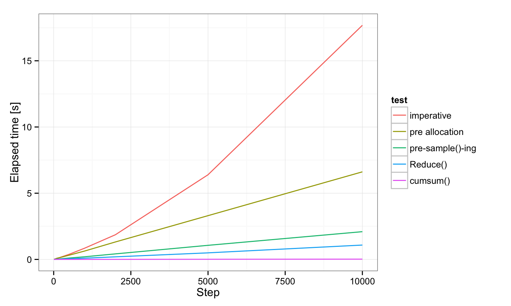
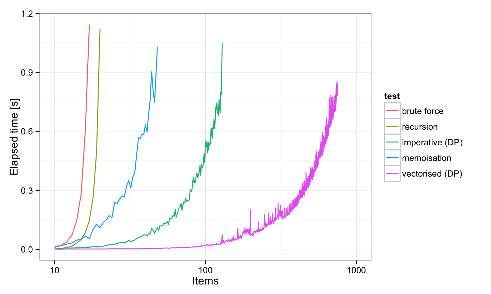

The R language
The R language

R fundamental styles
- Domain specific language (DSL)
- Designed for interactive use
- Functional and imperative
- Object oriented
- Lazy
- Vector / multidimensional language
Data Structures
- 0-dim a.k.a scalar: does not exist
- 1-dim: vector or list
- 2-dim: matrix (2D array) or data.frame
n-dim: array
- vector / matrix / array: homogeneous (preferred)
list / data.frame: heterogeneous
matrix
- It is a structure / object:
c()+ metadata - Filled by columns (
by.row = FALSE) - Dimmensions stored as attributes
m <- matrix(4:1, 2, 2)
dump("m", "")
## m <- ## structure(c(4L, 3L, 2L, 1L), .Dim = c(2L, 2L))
data.frame
- It is a structure / object:
list()+ metadata - Columnar data structure
- Row / Column names are stored as attributes
df <- data.frame(x = 1:5, y = 5:1)
dump("df", "")
## df <-
## structure(list(x = 1:5, y = c(5L, 4L, 3L, 2L, 1L)), .Names = c("x",
## "y"), row.names = c(NA, -5L), class = "data.frame")
Vectors
identical(c(1), 1) # No scalar type
## [1] TRUE
length("aaa") # Use `nchar()` for string length
## [1] 1
s <- "a"; s[5] <- "e"; s # NAs generated
## [1] "a" NA NA NA "e"
Vectors
c("aaa", 1.0, 1) # The most generic type wins
## [1] "aaa" "1" "1"
as.numeric(c("aaa", 1, 1)) # explicitly
## Warning: NAs introduced by coercion
## [1] NA 1 1
- order:
logical,numeric,complex,character
c(1, c(2, c(3, c(4))), 5) # Always flat
## [1] 1 2 3 4 5
Vectors
- Type
typeof(): logical, integer, double, character (and few more) - Length
length(): number of elements - Attributes
attributes(): metadata
Vectorisation
- Almost all functions are vectorised
identical(log(c(1, 2)), c(log(1), log(2)))
## [1] TRUE
- There are some expections
identical(sum(c(1,2),c(3), 4), sum(c(1,2,3,4)))
## [1] TRUE
identical(mean(1,2,3,4), mean(c(1,2,3,4)))
## [1] FALSE
Random Walk
walk1 <- function(n) {
x <- 0
for(i in 2:n) {
x[i] <- x[i - 1] + sample(c(-1, 1), 1)
}
x
}
Random Walk
walk1 <- function(n) {
x <- 0
for(i in 2:n) {
x[i] <- x[i - 1] + sample(c(-1, 1), 1)
}
x
}
- Preallocate output vector
x
Random Walk
walk2 <- function(n) {
x <- numeric(n)
for(i in 2:n) {
x[i] <- x[i - 1] + sample(c(-1, 1), 1)
}
x
}
sample(c(-1, 1)does not depend oni- compute all "steps" before loop
Random Walk
walk3 <- function(n) {
x <- sample(c(-1, 1), n, replace = TRUE)
for(i in 2:n) {
x[i] <- x[i - 1] + x[i]
}
x
}
x[i] <- x[i - 1] + x[i]is cumulative sum- there is a function for it:
cumsum()
Random Walk
steps <- function(n) sample(c(-1, 1), n, replace = TRUE) walk4 <- function(n) cumsum(steps(n))
walk5 <- function(n) Reduce(`+`, steps(n), accumulate = TRUE)
- Vectorised code
- Clear and transparent code
- No loops => no +1 or -1, zero, one indexing mistakes
Random Walk - Benchmark

Vectorisation
- Is not an optimisation technique
- It is a way of thinking
- Use Rcpp for hard problems
- Loop hiding:
lapply(),sapply(),vapply(),replicate(),mapply()… - Higher-Order Functions:
Reduce(),Filter(),Find(),Map(), … - Data Summary:
aggregate(), plyr, dplyr, data.table - Watch out for recycling rule
Recycling
1:6 + 1
## [1] 2 3 4 5 6 7
all((1:6 + 1:2) == (1:6 + c(1,2, 1,2, 1,2)))
## [1] TRUE
1:6 + 1:5
## Warning: longer object length is not a multiple of shorter object length
## [1] 2 4 6 8 10 7
R is functional
- Functions are first-class but lazy citizens
- Function can return function
- Function can be assigned to variable or list
- Function can be passed as an argument
sum.poly <- function(order) {
function(x) sum(x^order)
}
sum.sq <- sum.poly(2)
apply(data, 1, sum.sq)
Everything is a function
identical(`+`(3,4), 3 + 4)
## [1] TRUE
identical(`:`(1, 10), 1:10)
## [1] TRUE
identical(`<-`(a, 5), a <- 5)
## [1] TRUE
x <- 0; identical(`[`(x, 1), x[1])
## [1] TRUE
Everything is a function
- Count the number of function calls
if(a > 5) {
print("`a` is large")
} else {
print("`a` is small")
}
Everything is a function
`if`(TRUE, "true", "false")
## [1] "true"
`for`(i, 1:2, print(i))
## [1] 1 ## [1] 2
`{`(1,2,3)
## [1] 3
`(`(1)
## [1] 1
Fibonacci

Fibonacci
fib <- function(n) {
if(n < 3) 1
else fib(n - 1) + fib(n - 2)
}
- Repetition
Fibonacci - cache
fib.ugly <- function(xs) {
cache <- rep(NA, max(xs))
fib.n <- function(n) {
if(is.na(cache[n])) {
cache[n] <<- fib(n)
}
cache[n]
}
for(i in 1:length(xs)) xs[i] <- fib.n(xs[i])
xs
}
Fibonacci - improvements
fib.m <- memoise(function(n) {
if(n < 3) 1
else fib.m(n - 1) + fib.m(n - 2)
})
fib.vec <- Vectorize(function (x) {
fib.m(x)
})
Fibonacci
- Direct computation
fib.direct <- function(xs) {
alpha <- (1 + sqrt(5))/2
round(alpha ^ xs / sqrt(5))
}
Fibonacci - Benchmark

Knpasack Problem
- Maximise value of items
- but do not exceed the limit

Knpasack Problem
knapsack <- function(items, w) {
max <- c(0, w)
bag <- function(x) c(sum(items$v[x]), sum(items$w[x]))
# generate all combinations
for(i in 1:nrow(items)) {
res <- t(combn(nrow(items), i, bag))
# remove comb. which exceeds max weight
res <- res[res[, 2] <= w, , drop = FALSE]
if(nrow(res) >= 1 & max[1] < res[1]) {
# best item
max <- res[order(res[, 1], decreasing = TRUE)[1], ]
}
}
max[1]
}
- Inefficient
- Dynamic programming problem
Knpasack Problem
knapsack.dp <- function(items, w) {
m_new <- m <- rep.int(0, w + 1)
for(i in 1:nrow(items)) {
for(j in 0:w) {
if(items$w[i] <= j) {
m_new[j + 1] <- max(m[j + 1], m[j + 1 - items$w[i]] + items$v[i])
} else {
m_new[j + 1] <- m[j + 1]
}
}
m <- m_new
}
m[w + 1]
}
- Loops and indexing issues
Knpasack Problem
knapsack.dp2 <- function(items, w) {
m <- rep.int(0, w + 1)
for(i in 1:nrow(items)) {
m <- ifelse(
items$w[i] <= 0:w, # cond
pmax(m, m[pmax(1, 0:w + 1 - items$w[i])] + items$v[i]), # true
m # false
)
}
m[w + 1]
}
- Vectorised
ifis hard to understand forloop is hard to vectorise (due tomvariable)
Knpasack Problem
knapsack.mem <- function(items, w) {
solve <- memoise(function(i, j) {
if(min(i, j) <= 0) 0
else if(items$w[i] > j) solve(i - 1, j)
else max(solve(i - 1, j), items$v[i] + solve(i - 1, j - items$w[i]))
})
solve(nrow(items), w)
}
knapsack.rec <- function(items, w) {
solve <- function(i, j) {
...
}
solve(nrow(items), w)
}
Knpasack Problem - Benchmark

Resources & Credits
- R Inferno (Patrick Burns)
- Advanced R (Hadley Wickham)
- Evaluating the Design of the R Language
- Writing Better Statistical Programs in R (John Myles White)
- R language for programmers (John D. Cook)
- Functional programming in R (David L Miller)
- Functional programming in R (David Springate)
- Vectorization in R: Why? (Noam Ross)